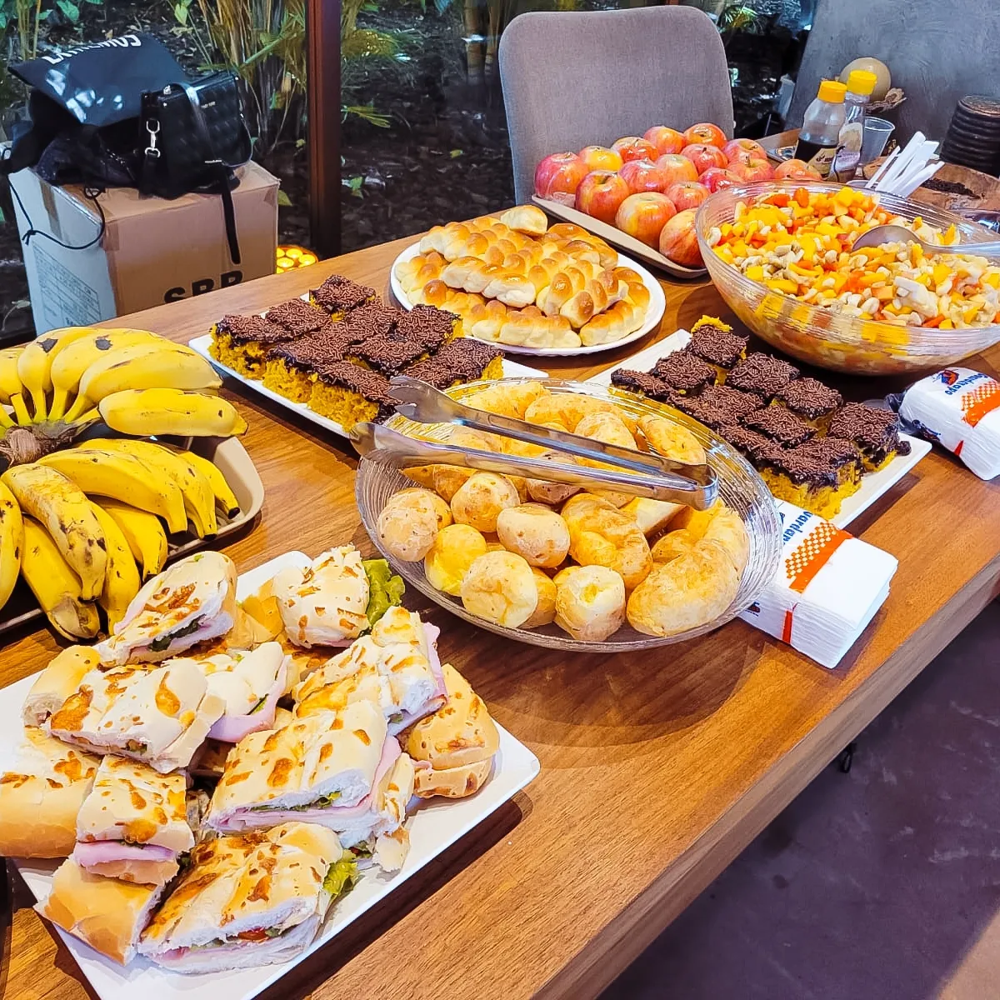
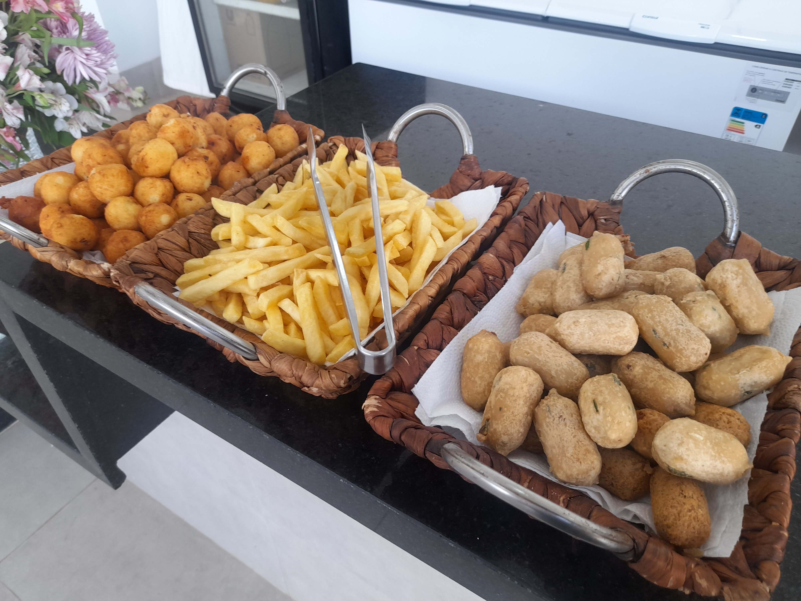
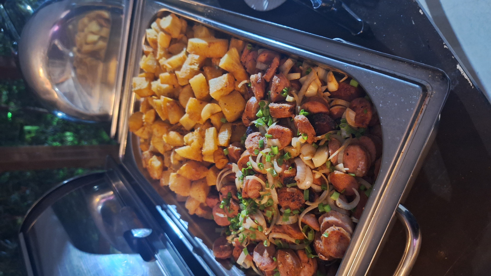
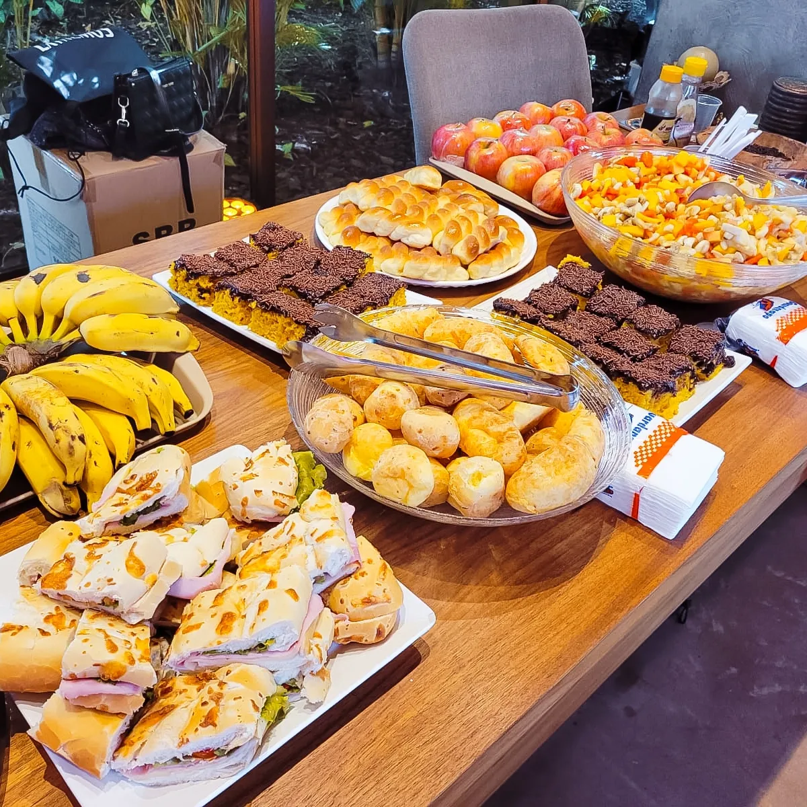
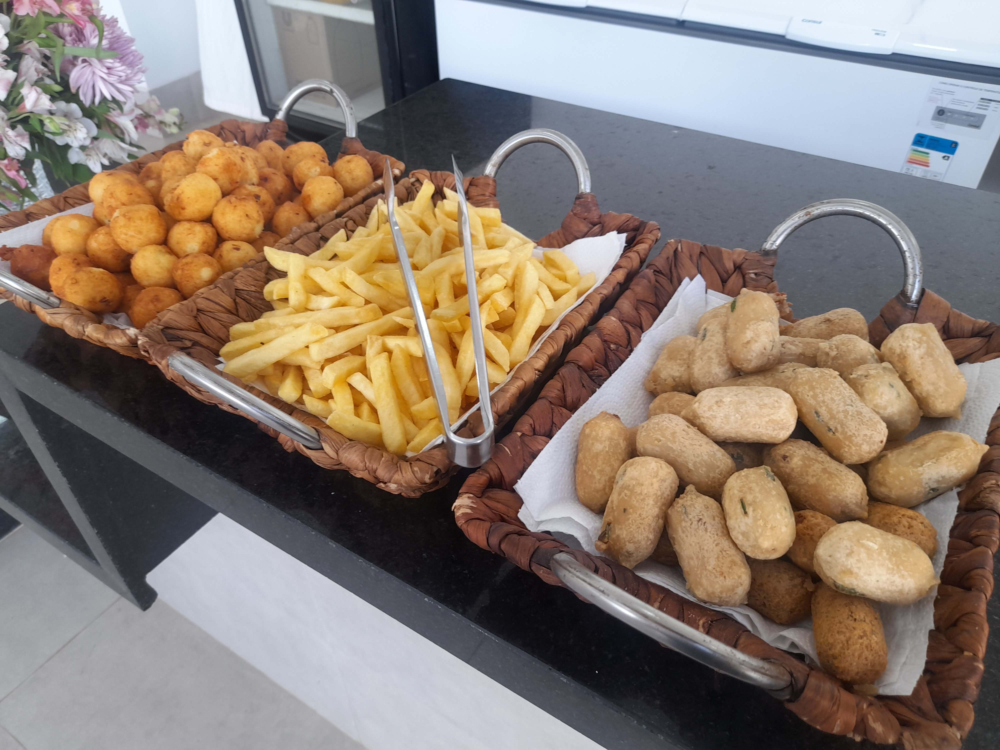
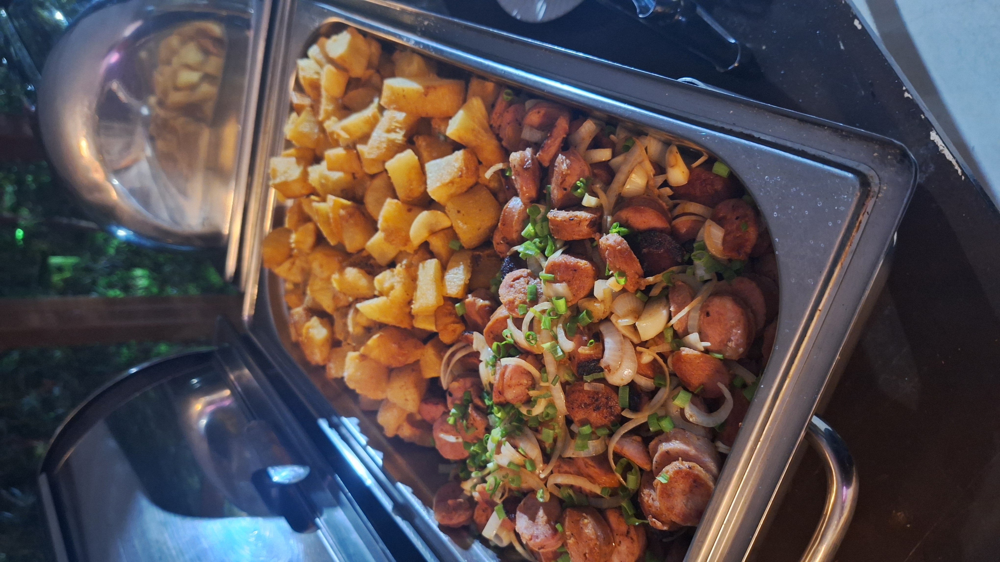

Meus Serviços
Buffet para Casamentos
Oferecemos serviços de buffet personalizados para casamentos, criando menus exclusivos que atendem às suas preferências e necessidades. Nossa equipe cuida de cada detalhe para garantir que seu grande dia seja perfeito.
Buffet para Eventos Corporativos
Proporcionamos serviços de buffet para eventos corporativos, garantindo uma experiência gastronômica de alta qualidade. Seja para reuniões, conferências ou festas de fim de ano, oferecemos um menu diversificado e adaptado às suas necessidades.
Buffet para Aniversários
Transforme seu aniversário em um evento memorável com nossos serviços de buffet. Oferecemos uma variedade de opções de menu, desde lanches e aperitivos até refeições completas, tudo preparado com ingredientes frescos e de alta qualidade.
Minha História
A história da Delfino Eventos é uma jornada de paixão e dedicação ao mundo dos eventos. Desde o início, Nilva Delfino se destacou por sua habilidade em transformar visões em realidade, oferecendo um serviço personalizado e de excelência. Com uma trajetória marcada pela inovação e pelo compromisso com a qualidade, a empresa se consolidou como referência no mercado de eventos.
Ao longo dos anos, a Delfino Eventos conquistou a confiança de inúmeros clientes, sempre priorizando a satisfação e o encantamento em cada projeto realizado. Nossa equipe é composta por profissionais altamente qualificados e apaixonados pelo que fazem, o que garante que cada evento seja único e memorável.
A empresa não apenas organiza eventos, mas também cria experiências que ficam guardadas na memória dos participantes. Desde casamentos deslumbrantes até eventos corporativos de grande porte, cada detalhe é meticulosamente planejado e executado com precisão.
Acreditamos que cada evento conta uma história, e a nossa missão é ajudar a contar essa história da maneira mais bonita e impactante possível. Com um portfólio diversificado e anos de experiência no setor, a Delfino Eventos continua a crescer e a se reinventar, sempre em busca da perfeição e da satisfação total dos nossos clientes.
Gastronomia
A gastronomia é a alma dos nossos eventos. A paixão por criar experiências culinárias únicas nos leva a buscar sempre os melhores ingredientes e a desenvolver receitas inovadoras. Cada prato é uma obra-prima, elaborada com técnicas refinadas e uma pitada de criatividade. Do menu mais sofisticado ao buffet mais descontraído, garantimos que cada refeição seja uma celebração de sabores.
Nossa equipe de chefs experientes trabalha com dedicação para oferecer uma experiência gastronômica que surpreende e encanta a todos os paladares. Utilizamos técnicas culinárias de vanguarda, combinadas com a tradição e o carinho em cada preparo. Desde entradas requintadas até sobremesas divinas, cada detalhe é pensado para proporcionar uma viagem gastronômica inesquecível.
A variedade e a qualidade dos nossos pratos são inigualáveis. Trabalhamos com ingredientes frescos e locais, valorizando a riqueza da nossa região e respeitando a sazonalidade dos produtos. Isso resulta em menus autênticos e cheios de sabor, que refletem a essência do evento e os desejos dos nossos clientes.
Seja em um jantar formal ou em um coquetel descontraído, nossa gastronomia se destaca e se adapta às necessidades e preferências dos nossos convidados. A atenção aos detalhes e a busca constante pela perfeição fazem com que cada evento se torne uma experiência única e inesquecível.
Galeria de Fotos
 




